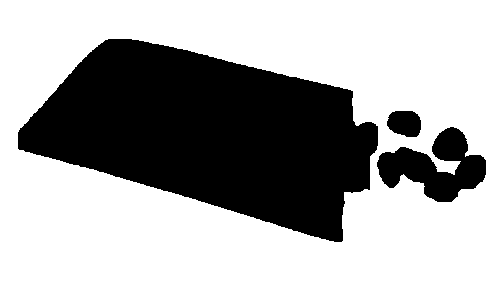
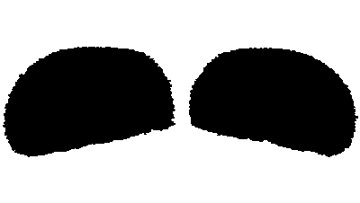
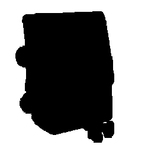
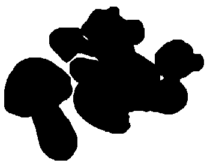
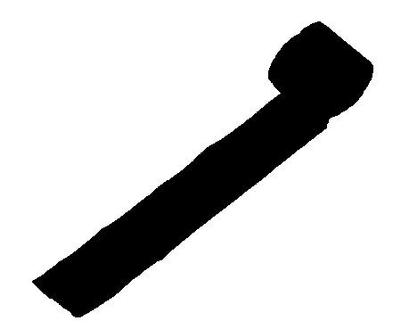
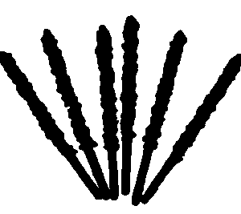

Small stones in the rectangular vinyl bag
Packaged chocolate snack with a bright orange design featuring a playful dinosaur on the front. In the package, there are small, colorful, rock-shaped chocolate pieces in shades of white, brown, and pink, resembling candies or chocolate-covered nuts.
The exterior is pink and fluffy
The exterior is pink and fluffy, covered with a coconut or marshmallow texture. Inside, there is a layer of chocolate cake surrounding a creamy white filling in the center.
Yellow balls in the colorful telephone booth made of plastic
A bright pink toy resembling an old-fashioned rotary phone, with a yellow receiver and a keypad that has yellow buttons. In this toy, there are small, round, yellow candies, resembling small chocolate balls or gumdrops. The packaging has Korean text and a cartoon image of a child.
Mushroom with hard, crispy texture
They are shaped like small mushrooms. Each piece has a biscuit stem and a chocolate cap resembling a mushroom top. The packaging, a paper box, is bright and colorful, featuring a cartoon character.
Looks like a roll of toilet paper
This is a rolled-up piece of jelly candy with various kinds of vibrant color layers. It has a smooth, translucent texture and is unrolled slightly to reveal its flat, chewy form. It appears to be soft and flavorful, with the colors blending together in a neat, striped pattern.
Chocolate sticks which look like '1'
These are long, thin biscuit sticks coated in chocolate, topped with crunchy bits. The exposed biscuit ends are light brown, while the chocolate-covered parts are dark brown. They almost look like a cane, chopsticks, or even the number 1, don't they?
This dinosaur has a yellow tongue
This looks like a tape dispenser shaped like a snail... or maybe even a dinosaur. But it's actually a quirky yellow snack! The roll of candy curls like a delicious swirl of tape, and the 'tape' itself peeks out like a tempting tongue of cheese. A playful mix of the practical and the whimsical, this little treat blurs the line between snack time and stationery supplies.